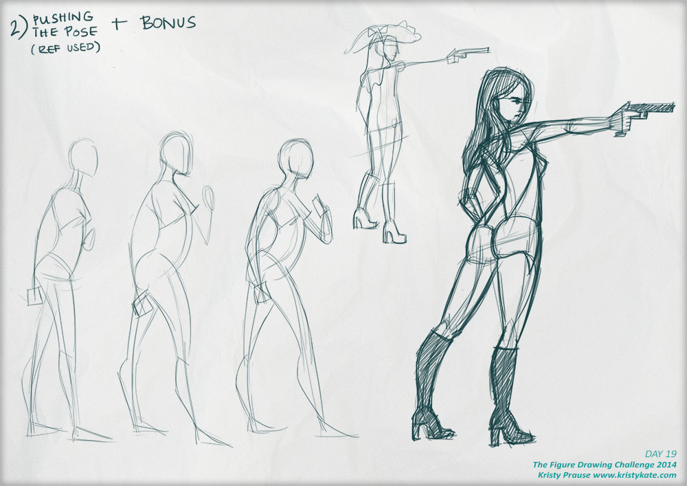

Week 16 Studies
July 7th - 13th
I completed the Pencil Kings Figure Drawing Challenge! Yay!
There's quite a big update ahead so let's get straight into it:
Day 15 Back Anatomy
I really enjoyed learning the muscles in such a simplified way. Exercise 2 involved sketching a figure from photo reference and then adding in the muscles - it was a great activity for gaining a better understanding of how the muscles fit together.
Day 16 Figure Drawing
This was basically Exercise 2 from Day 15, but this time with one set of figures drawn from reference, and the other from imagination.
Day 17 & 18 Perspective
Somehow I got confused with perspective! I felt like I couldn't "see" where the horizon line and vanishing points should be (despite understanding the general concept) and how to apply the figure to that space. It's certainly a subject to revisit in the future.
Day 19 Pushing Poses
Another really fun exercise - learning to exaggerate aspects of the pose to give the figure more energy.

Day 20 Drawing from Imagination
This wasn't quite drawing from imagination, rather adapting an existing pose (photo reference was used here) to a different body. Good fun!
And lastly,
Day 21 Before & After
I decided to compare my new skills to one of the turnarounds I completed in May (roughly 3 weeks before the challenge started). Quite happy to see improvements in the form and pose of the figure. Also, ankles and feet!
Some final thoughts on the Pencil Kings Figure Drawing Challenge:
This was a great 4-week course. While I would have personally liked some more detailed information here and there (hands and perspective for instance), I believe the course met what it had set out to achieve. The exercises, accompanied with Sycra's instructional videos, took complicated subject matter and made it easy to digest, giving artists a good foundation in drawing the human body from both reference and imagination.
If you're having trouble understanding human anatomy and would like to improve your skills I definitely recommend checking out Pencil Kings future Figure Drawing Challenges - I believe there will be another course later this year.
Until next time,
x Kristy Kate
+ + +
Have any thoughts on my studies? Join me on my creative journey and share your own by leaving a comment (critique welcome) or connecting via Twitter or Facebook.